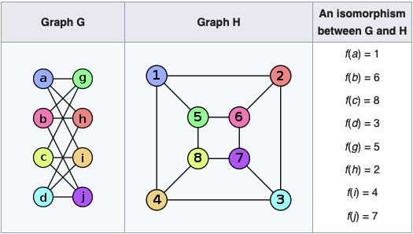

Why:These notes are based on Chapter 4 of [1]. At the time of writing, I wanted to understand and re-derive the proofs for Poplar and Prio, so I could write my own paper.
Knowledge is related to computational difficulty, whereas information is not. Assume that Alice and Bob have access have access to a public Graph \(G\). Alice answers questions of the form “Is the graph Eulerian?” or “Is the graph Hamiltonian?”. From an information-theory point of view, answers to both questions give Bob 1 bit of information (yes or a no), so the answers are equivalent.
Knowledge relates mainly to publicly known objects,whereas information relates mainly to objects on which only partial information is publicly known. Consider the case in which Alice answers each question by flipping an unbiased coin and telling Bob the outcome. From an information-theoretic point of view, Bob gets from Alice information concerning an event. However, we say that Bob gains no knowledge from Alice, because he could toss coins by himself.
Let \(A\) and \(B\) be two interactive turing machines (ITM). Let \(\langle A,B \rangle(x)\) be the random variable representing the local output of \(B\) when interacting with \(A\) on common input \(x\).
The Complexity of an Interactive Machine: We say that an ITM \(A\) has time complexity \(t: \mathbb{N} \rightarrow \mathbb{N}\), if for every ITM \(B\) and every common input string \(x\), machine \(A\) regardless of its or \(B\)’s random tape; halts in \(t(|x|)\) steps. \(A\) is poly time if there exists a polynomial \(p\) such that \(t=p\).
A pair of ITM’s \((P,V)\) is called an interactive proof system for a language \(L\) if machine \(V\) is polynomial time and the following two hold:
Completeness: For every \(x \in L\) and given prover \(P\), we have \(\mathbb{P}[\langle P,V \rangle(x) = 1] \geq \frac{2}{3}\)
Soundness: For every \(x \notin L\) and and every interactive machine \(B\), we have \(\mathbb{P}[\langle B,V \rangle(x) = 1] \leq \frac{1}{3}\)
By definition of \(\mathcal{NP}\) there is a polynomial time verifier that approves provers witness.
In other words, \(\mathcal{NP}\) can be viewed as a class of interactive proof systems in which the interaction is unidirectional (i.e., from the prover to the verifier) and the verifier is deterministic (and never errs)
In general proof systems, this requirement is waived. The communication is bi-directional and the verifier could be probabilistic. Such a class is referred to as \(\mathcal{IP}\)
Two graphs \(G_1=(V_1, E_1), G_2 = (V_2, E_2)\) are isomorphic if there exists a 1-1 and onto mapping \(f\) such such that any two vertices \(u\) and \(v\) of \(V_1\) are adjacent in \(G_1\) if and only if \(f(u)\) and \(f(v)\) are adjacent in \(G_2\).
Picture from Wikipedia
Watch first 30 min of this lecture video for better explanation
We want the verifier to accept if two graphs are non-isomorphic and reject otherwise with correctness and soundness as defined above. NOTE: we need a honest prover with unbounded computation capability to do this. This doesn’t matter, as the definitions only require the verifier to be poly time.
The proof goes as follows:
The verifier samples a bit \(\sigma \in \{1, 2\}\). It then picks a random permutation \(\pi\) from the set of all random permutations, and permutes \(V_\sigma\) to get \(H = \{ (\pi(u), \pi(v)): (u,v) \in E_\sigma\}\).
The honest prover is all powerful, and is able to figure out if \(H\) isomorphic to \(G_1\) or \(G_2\). Let \(H\) be isomorphic to \(G_b\) where \(b \in \{1, 2\}\). It then sends \(b\) back to the verifier.
If \(b = \sigma\) then the verifier accepts.
Completeness: If the graphs are non isomorphic, the \(b\) will always be equal to \(\sigma\). It accepts with no error.
Soundness: If the graphs are isomorphic, then the prover will then both \(b\)’s are equally likely and we get accept with probability \(1/2\). This holds as long as \(b\) is secret (private coin) – but this not essential as there is a way to convert this into a public coin protocol with one more round.
Loosely speaking, we say that an interactive proof system \((P, V)\) for a language \(L\) is zero-knowledge if whatever can be efficiently computed after interacting with \(P\) on input \(x \in L\) can also be efficiently computed from \(x\) (without any interaction).
We stress that this holds with respect to any efficient way of interacting with \(P\), not necessarily the way defined by the verifier program \(V\). Actually, zero-knowledge is a property of the prescribed prover \(P\). It captures \(P\)’s robustness against attempts to gain knowledge by interacting with it.
For a given interactive proof system \(\langle P,V \rangle\) and common input \(x\), \(P\) is perfectly zero knowledge if for every probabilistic poly time verifier \(V^*\), there exists an ppt algorithm \(M^*\) such that for ever \(x \in L\) the following random variables are identically distributed:
Machine \(M^{*}\) is called a simulator for the interaction of \(V^*\) with P.
Admittedly, failure to provide a simulation of an interaction with the outside does NOT necessarily mean that this interaction results in some “real gain” (in some intuitive sense). Yet what matters is that any “real gain” can NOT occur whenever we are able to present a simulation.
Trivially, any language in \(\mathcal{BPP}\) has a perfect zero knowledge proof.
Unfortunately, the above definition is too strict. No one has yet shown a non trivial case where all the requirements are satisfied. So we define a relaxation by allowing the simulator to fail to come up with an answer with probability at most \(\frac{1}{2}\).
For a given interactive proof system \(\langle P,V \rangle\) and common input \(x\), \(P\) is perfectly zero knowledge if for every probabilistic poly time verifier \(V^*\), there exists an ppt algorithm \(M^*\) such that for ever \(x \in L\) the following random conditions hold:
Machine \(M^{*}\) is called a simulator for the interaction of \(V^*\) with P.
We observe (based on some bits in chapter 3) that for practical purposes there is no need to be able to “perfectly simulate” the output of \(V^*\) after it interacts with \(P\). Instead, it suffices to generate a probability distribution that is computationally indistinguishable from the output of \(V^*\) after it interacts with \(P\).
Ensembles \(\{ R_x\}_{x \in L}\) and \(\{ S_x\}_{x \in L}\) are computationally indistinguishable if for every ppt algorithm D and for every polynomial, for sufficiently long \(x \in L\), it holds that
\[\begin{align*} \Bigg| \mathbb{P}\Big[ D(x, R_x)=1\Big] - \mathbb{P}\Big[ D(x, S_x)=1\Big]\Bigg| &< \frac{1}{p(|x|)} \end{align*}\]
Let \((P, V)\) be an interactive proof system for some language \(L\). We say that \((P, V)\) is computationally zero knowledge or just simply zero knowledge if for every probabilistic poly time verifier \(V^*\), there exists a probabilistic ppt algorithm \(M^*\) such that the following two ensembles are computationally indistinguishable:
Machine \(M^{*}\) is called a simulator for the interaction of \(V^*\) with P.
An alternative formulation of zero-knowledge considers the verifier’s view of the inter- action with the prover, rather than only the output of the verifier after such an interaction. By the “verifier’s view of the interaction” we mean the entire sequence of the local configurations of the verifier during an interaction execution) with the prover.
It suffices to consider only the content of the random tape of the verifier and the sequence of messages that the verifier has received from the prover during the execution (since the entire sequence of local configurations and the final output are determined by those objects).
Let \((P, V), L\) and \(V^*\) be as defined above. Denote \(\text{view}^P_{V^*}\) as the random variable describing the contents of random tape \(V^*\) and the messages \(V^*\) receives from \(P\) during a joint computation on common input \(x\). We say that \((P,V)\) is ZK if for every ppt interactive verifier \(V^*\) there exists a probabilistic ppt algorithm \(M^*\) such that \(\{\text{view}^P_{V^*}\}_{x \in L}\) and \(\{M^*\}_{x \in L}\) are computationally indistinguishable.
Computational ZK and View based ZK differ in that one requires the output of the verifier to be indistinguishable from the simulator output and the other requires the view. Clearly the output can be computed using the view using a deterministic poly-time algorithm but the view cannot always be computed using just the output. Thus the second definition guarantees the first definition and is usually easier to work with (and also seen in most papers). It can be also shown that the two definitions are equivalent (because of the every condition in the verifier definition)
Same as computational ZK definition but uses statistical difference.